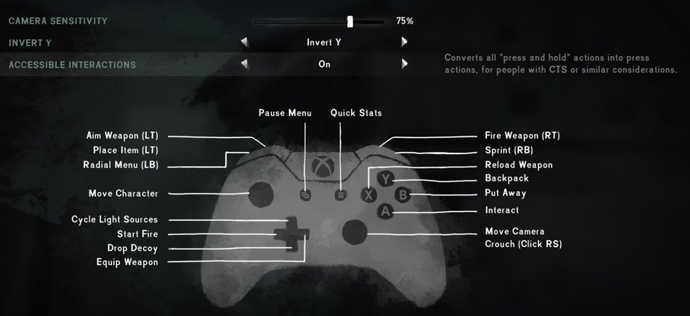
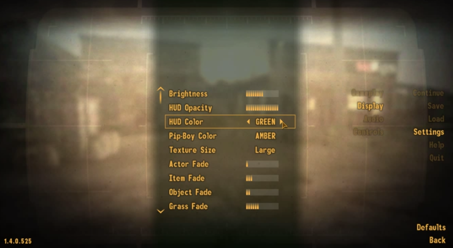
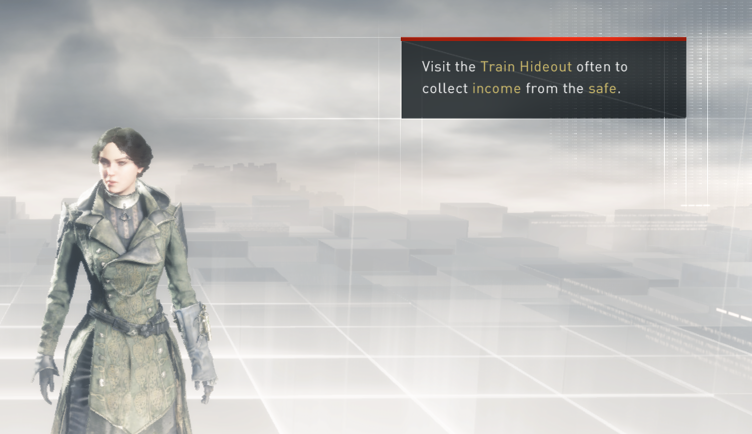
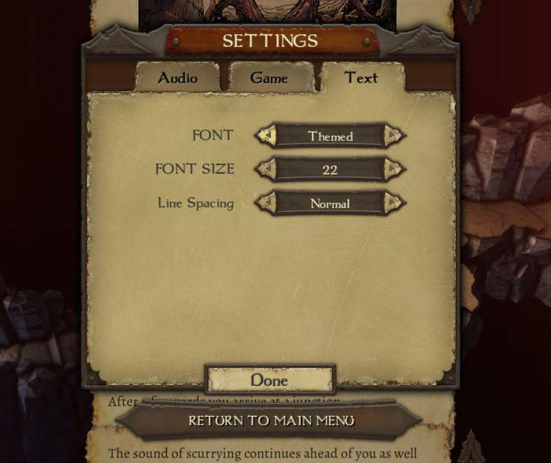
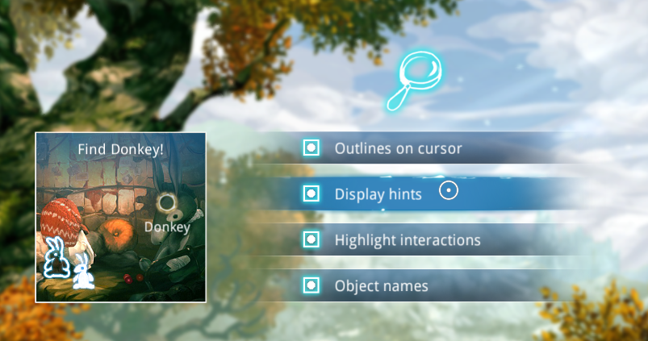
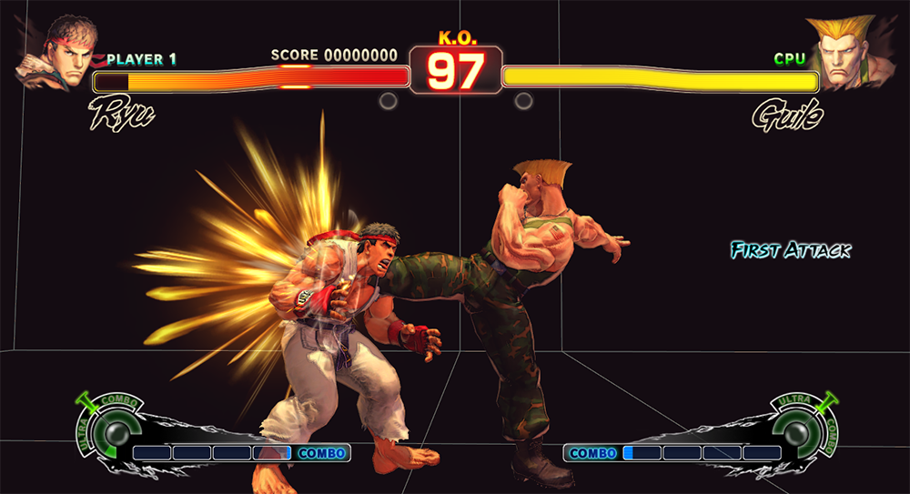
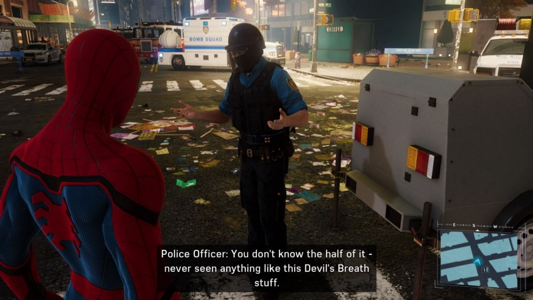
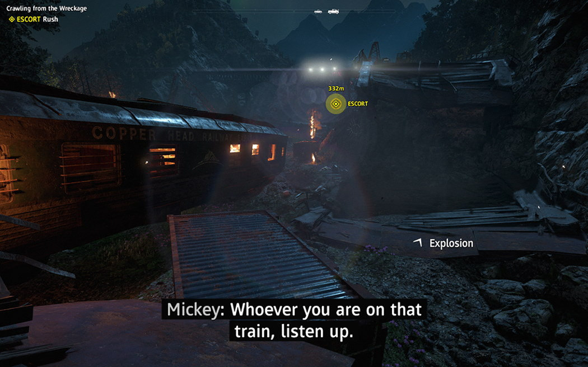
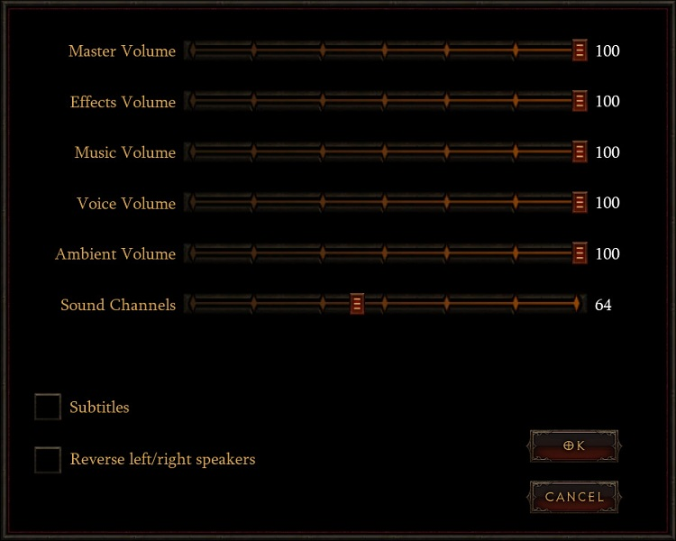

Offrir un large choix de difficultés de jeu
Permettre de modifier le niveau des IA, la vitesse des ennemis, la difficulté des enigmes,.. et eviter
de catégoriser les niveaux de difficultés inférieurs par des termes qui peuvent paraître rabaissant pour
l'utilsateur.
Par exemple, le jeu Shadow of the Tomb Raider permet un choix de difficultés sur plusieurs
élément précis du gameplay.

Afficher les détails des fonctionnalités accessibles du jeu
N'étant pas encore un standard, certains joueurs n'ont pas connaissance des fonctionnalités d'accessibilité présent dans un jeu.
Il est donc nécéssaire de les informer sous forme de menu affiché avant le début du jeu ou bien d'informations lors des écrans de chargement par exemple.
Le jeu Battlefield Harline a par exemple inclut dans l'écran de chargement une information concerant le mode daltonien

Permettre de sauvegarder les paramètres selon plusieurs profils
Plusieurs joueurs peuvent être amener à utiliser une console ou un jeu. Chaque joueur a ses propres besoins et préférences de réglages. Sauvegarder
plusieurs profils est nécessaire pour éviter de devoir modifier ces paramètres à chaque fois.
Certains jeux comme World of Warcraft sauvegarde les préférences de jeu par profils et non par machine.

Eviter ou donner une alternative pour le maintien d'un bouton enfoncé
Maintenir un bouton enfoncé peut être douloureux et fatiguant pour certains joueurs. Dans la mesure du possible, il
faut éviter d'inclure ce type de controles mais dans le pire des cas donner une alternative au joueur.
Le jeu The Long Dark propose par exemple l'alternative d'appuyer seulement une fois au lieu de garder le bouton enfoncé.

Permettre de modifier la taille de l'interface
En plus des différences de taille d'écran possible, permettre de modifier la taille d'une interface est essentiel pour les personnes
ayant du mal à voir les petits éléments présents. De plus, certains joueurs préfère rétricir certains éléments pour laisser plus de place au gameplay.
Par exemple, le jeu Street Fighter 5 propose de cacher certains éléments de l'interface de jeu ou de les déplacer.

Permettre d'ajuster la vitesse du jeu
Pouvoir régler la vitesse de jeu est intéréssant pour les personnes agées souhaitant jouer au jeu ou lors de troubles de réactivités.
Voici un exemple de réglage de la vitesse dans le jeu Celeste 3

Permettre de modifier la couleur du texte et le contraste
Les contrastes élévés peuvent poser problèmes aux personnes qui ont certaines formes de dyslexie. Certaines
combinaisons de couleur fonctionnent mieux selon la forme. La meilleure solution est de proposer un choix libre de couleur de texte et de fond.
Le jeu Fallout 3 propose une interface permettant de régler la couleur du texte ainsi que son opacité.

Surligner les mots importants
Beaucoup de textes peut être difficle à comprendre surtout pour les personnes ayant des difficultés de lecture. Certaines
personnes cherchent également les informations importantes sans lire intégralement le texte. Surligner les mots important est donc nécessaire pour
mettre en évidence les mots clés. De plus il faut éviter de faire des phrases trop longues pour que celle-ci soit facilement compréhensible par le joueur.
Le jeu Assassins Creed Syndicate indique les mots impportants en changeant simplement la couleur du texte.

Permettre d'activer/désactiver les périphériques haptiques
Les périphériques haptiques sont très utiles en terme d'accessibilité mais peuvent être incomfortable et même causer des douleurs pour certaines personnes.
Il faut donc au minimum permettre au joueur de l'activer/désactiver mais au mieux pouvoir régler l'intensité de celui-ci.
C'est ce que propose par exemple le jeu Forza Horizon 4

Permettre de modifier la taille de la police du texte
Avoir une bonne taille de police par défaut est nécessaire cependant il n'existe aucune taille unique que tout le monde puisse lire. En fonction
des différences au niveau de la taille d'écran ou encore des déficences visuelles, pouvoir choisir une taille de police est beaucoup plus efficace.
C'est ce que propose par exemple, le jeu Warlock of Firetop Mountain. En plus de choisir la taille de police, on peut également modifier l'espacement entre les lignes ce qui améliore la lisibilité du texte.

Montrer que les éléments interactifs sont interactifs
Certains joueurs peuvent avoir des problèmes pour distinguer les élements interactifs présents, il est donc important de mettre ces éléments en évidence.
Cela peut se faire par des changements de styles et/ou contrastes.
Comme le fait par exemple, le jeu Silence.

Permettre de modifer le contraste
Les problèmes de constraste ne concerne pas seulement les situations de déficiences visuelles mais également lors de l'exposition du soleil sur l'ecran ou encore lors du mode economie d'énergie de la console.
Permettre de modifer le contraste est donc important pour le confort du joueur. Permettre de modifier les assets, en mettant par exemple des fonds plus sombres est également une bonne pratique en terme d'accessibilité.
Le jeu, Street Fighter 4 permet par exemple, de remplacer les animations de fond par un fond noir qui augmente le contraste.

Mettre des sous-titres pour toutes les conversations importantes
Les sous-titres sont utilisés par beaucoup de joueurs et pour de nombreuses raisons comme une déficience auditive, des nuisances sonores environnantes ou encore du materiel defecteux.
Les conversations ou élements textuelles important pour l'avancée du jeu doivent être sous-titrés pour garantir
une bonne expérience au joueur. De plus, les sous-titres doivent être lisible et contenir des phrases courtes.
Aujourd'hui cela est inclut dans la plupart des jeux mais voici l'exemple du jeu Marvel’s Spider-Man dont les sous-titres sont bien intégrés.

Mettre des indications pour les sons de fond importants
Pour permettre a tous les joueurs la même expérience, mettre des indications visuelles lors d'effets sonores est important. Cela permet aux joueurs
qui jouent sans son d'être dans l'ambiance.
Ubisoft inclut ces pratiques comme par exemple dans le jeu Far Cry: New Dawn. En plus de simple indications, la provenance des sons est également indiquées.

Permettre de modifier le volume des effets sonores, de la musique de fond et des conversations
Le joueur doit pouvoir modifier indépendamment le volume de la musique d'ambiance, des effets sonores ainsi que des conversations. Cela est
d'autant plus nécessaire pour les joueurs ayant une déficience affectant la perception des fréquences sonores.
Une interface simple suffit, comme dans le jeu Diablo 3
